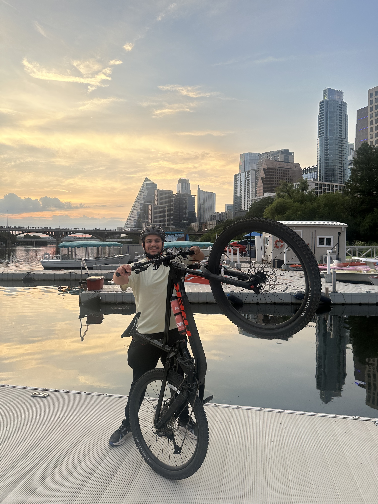
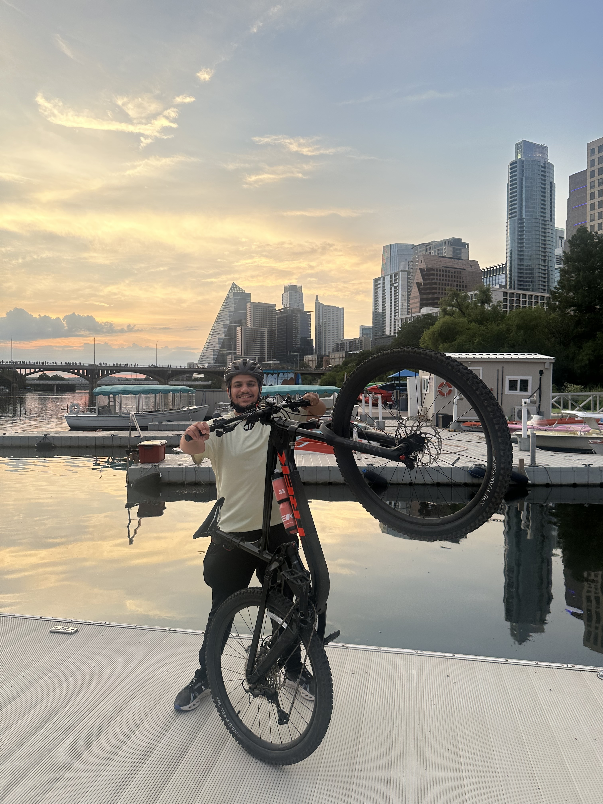

Amir Exir, M.Eng EE, P.E., NCSO
Power Systems Engineer | AI Researcher | EMS & Planning Expert | UT Austin AI Graduate Student
Power Systems Engineer | AI Researcher | EMS & Planning Expert | UT Austin AI Graduate Student
Professional Engineer (P.E.) and NERC Certified Reliability Coordinator with 6+ years in power systems across operation, planning, and modeling at ERCOT and LCRA. Experienced in PSS/E, GE EMS SCADA/TSM/DTS, ABB MMS and Python. Currently pursuing an M.S. in AI at UT Austin. AWS/IBM Certified.


Tools built to automate, simplify, and accelerate engineering workflows using AI, NLP, and power system knowledge.
An intelligent assistant trained on ERCOT’s Nodal Protocols, Planning Guides, Interconnection Handbook, and Working Group manuals (DWG & SSWG). Designed to help engineers, planners, and developers quickly navigate ERCOT’s technical standards—covering topics like PMCR/DCP submissions, Section 6.9 generator modeling, dynamic validation, and market rule compliance.
Ask the ERCOT AI AssistantBuilt to answer questions from ERCOT’s Dynamic and Steady-State Working Group manuals. Supports queries about flat start case development, model validation, and NERC compliance.
Ask the ERCOT DWG & SSWG BotInteract with the official ERCOT Planning Guide — get clear answers about planning procedures, updates, and compliance expectations.
Ask the ERCOT Planning BotDesigned to support engineers and developers with ERCOT’s interconnection process. Ask questions about data submittals, timelines, and requirements.!
Ask the ERCOT Resource Integration BotHelps you quickly search and understand ERCOT Protocols — from market rules to operating procedures.
Ask the ERCOT Nodal Protocals BotAn AI-powered Copilot-style tool that helps engineers automate common PSS®E workflows using Python. It leverages semantic search over curated technical materials and examples to generate scripts for contingency analysis, dynamic simulation, and model tuning.
Ask the PSS/E Automation BotAn advanced AI-driven multi-agent assistant for automating complex PSS®E tasks using Python. It combines task planning, retreival, execution & intelligent code generation Agents in an Agent loop, and retry mechanisms to produce validated scripts for workflows like contingency analysis, load flow, and GUI-based tools. Powered by semantic search over curated PSS/E API and real examples.
Try the PSS/E Multi Agent Automation BotAn interactive AI tool that predicts power system fault types using current and voltage measurements (Ia, Ib, Ic, Va, Vb, Vc). Built using Scikit-learn, Streamlit, and real system data — ideal for field diagnostics and system protection training.
Launch the Fault Classifier AppTest dataset adapted from Electrical Fault Detection and Classification by eSathyaPrakash on Kaggle.
A forecasting tool that predicts hourly energy consumption for AEP / PJM regions using historical data and machine learning models. Built in Streamlit for interactive exploration.
Launch the Hourly Load Forecast AppDataset source: Kaggle - PJM Hourly Energy Consumption
An advanced Graph Convolutional Network (GCN + Message Passing) that learns from simulated power grid scenarios to predict voltage and thermal alarms across buses and transmission lines. The model dynamically reconstructs grid topologies, trains on N-1/N-2 contingency cases, and performs cross-validation to ensure high accuracy. Built using PyTorch Geometric, Pandapower, Scikit-learn, and Streamlit.
Launch the Power Grid GNN AppTip: In the Streamlit app, you can toggle between Voltage Alarms, Thermal Alarms, or Combined prediction modes for end-to-end learning and real-time grid visualization.
Fine-tuned TinyLlama-1.1B-Chat on the MedQuAD dataset (16K medical Q&A pairs) using LoRA parameter-efficient fine-tuning. Achieved measurable improvements in ROUGE-1/2/L while keeping training feasible on limited compute (gradient checkpointing, 4-bit quantization, AdamW + warmup). Published model and reproducible workflow now available for the AI healthcare research community.
Project completed for AI in Healthcare (AI W395T) at UT Austin. View presentation online.
This project combines real-time market data, AI-generated trading summaries, and automated daily updates using Streamlit, n8n, and the Alpaca Paper Trading API.
Launch the Stock Market & Crypto AI Agent View Daily Market Updates on TelegramFeatures:
An interactive interview preparation assistant trained on my professional background, resume, and STAR stories. Built with OpenAI’s GPT API and Streamlit to simulate realistic behavioral interview sessions.
Launch the AI Interview AssistantThis tool helps me practice interview questions across Amazon’s Leadership Principles and technical problem-solving scenarios.
I trained a neural network to drive autonomously in SuperTuxKart using CNNs, Transformers, and MLPs. This project, inspired by my Deep Learning course at UT Austin, showcases waypoint prediction and dynamic driving through an open-source simulator.
This demo showcases a Python-based GUI that performs N-1 contingency analysis on custom-built power system models. Built using Tkinter, it allows adding buses, branches, and simulating outages with real-time results.
AELab is a Python-based GUI that automates key PSS®E workflows for power system engineers, including contingency analysis, dynamic simulation, transmission project reporting, and IDV generation. Built using AI-assisted development and real-world experience at LCRA and ERCOT.
ACCC Analysis Input & Progress
Thermal Violations Summary
Voltage Violations Summary
TPIT – AELAB Voltage Violations in Excel
TPIT – AELab Thermal Violations in Excel

Dynamic Simulation Report
Dynamic Simulation Plot
IDV Generator – Line Upgrades
TPIT – Transmission Project Info Tool
TPIT ‚Äì üåô AELab Dark Mode üåô


 



My personal DJ station setup